PESQUISA
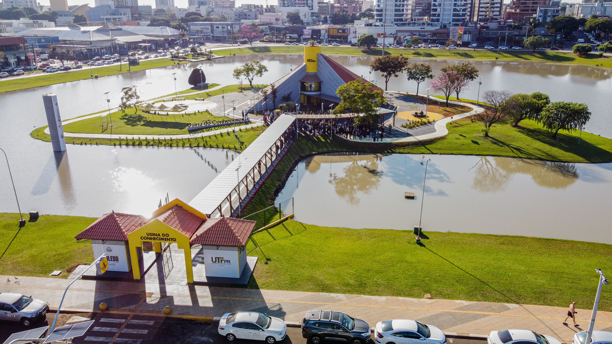
Lago Municipal Diva Paim Barth
Um dos pontos turísticos mais conhecidos de Toledo, ideal para caminhadas e lazer.
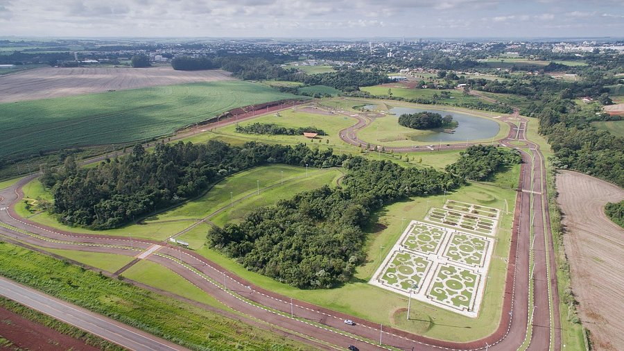
Parque do Povo Luiz Cláudio Hoffmann
Amplo espaço de lazer, convivência, caminhada, esporte e descanso ao ar livre.
Teatro Municipal
Centro cultural com apresentações, eventos e festivais durante todo o ano.
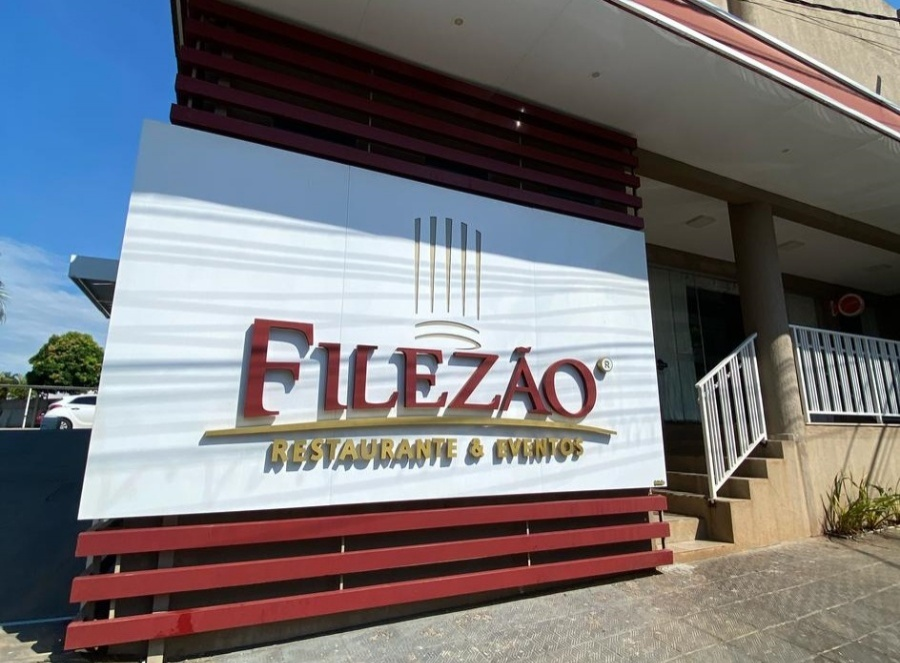
Restaurante Filezão
Restaurante tradicional com pratos típicos e excelente atendimento.
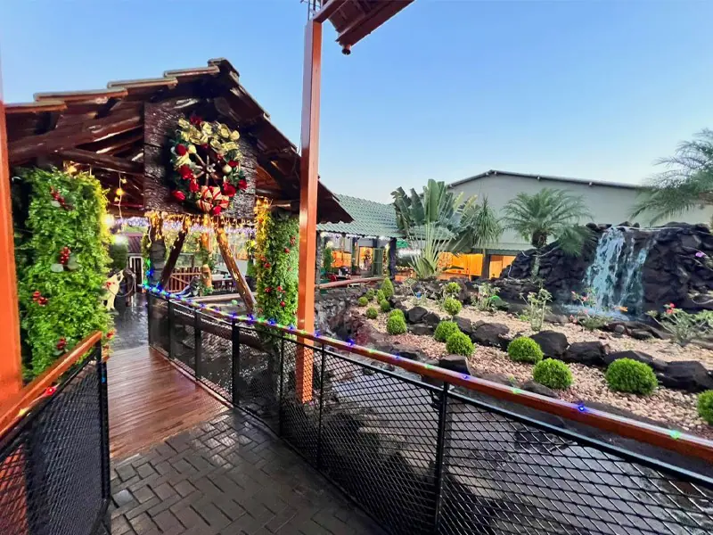
Restaurante Peixe Frito Pantanal
Um dos restaurantes mais comentados em Toledo: ambiente amplo, especializado em peixes e frutos do mar, ótimo para famílias ou encontros maiores.
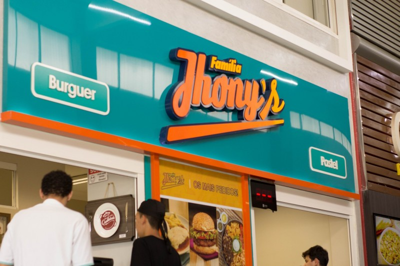
Jhonys Gastronomia Restaurante
Restaurante bem avaliado, localizado dentro do Shopping Panambi, o que facilita para quem está na cidade ou quer algo bem organizado.
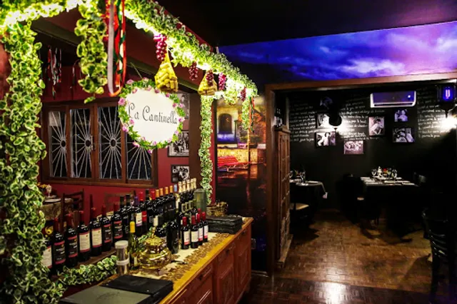
La Mafia Trattoria Toledo
Especializado em culinária italiana. Ótima opção para jantar mais descontraído, com massas, vinhos ou pratos especiais.
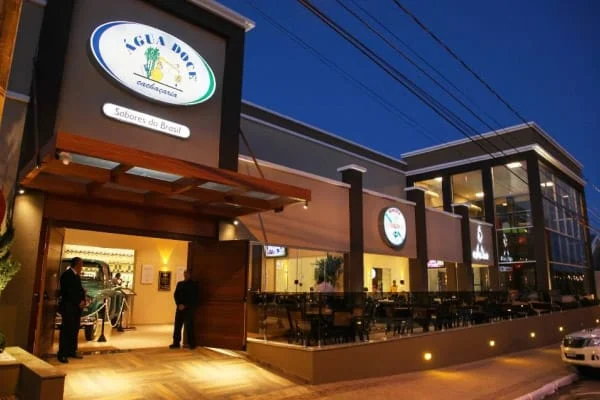
Água Doce Cachaçaria Toledo
Ambiente descontraído, ideal para happy-hour ou almoço mais informal. Mistura de pratos e bebidas brasileiras.
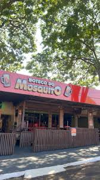
Boteco do Mosquito
Muito popular entre moradores: ambiente de boteco, bom para sair com amigos, descontraído.
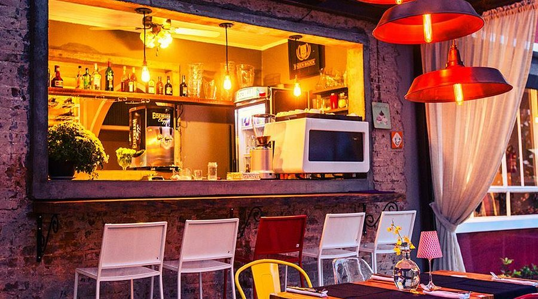
Polaroid Bistrô
Bistrô no centro de Toledo, opção mais refinada para jantar ou encontro especial.
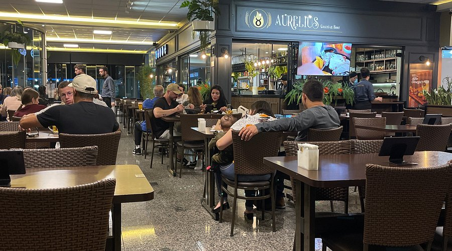
Aurelius Gastrô & Beer
Combina boa gastronomia com cervejas especiais, ideal para quem gosta de sair para jantar e beber algo diferente.
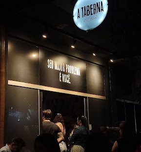
A Taberna Colonial
Bar com ambiente mais intimista ou alternativo. Boa pedida para noites com música ou encontro tranquilo.
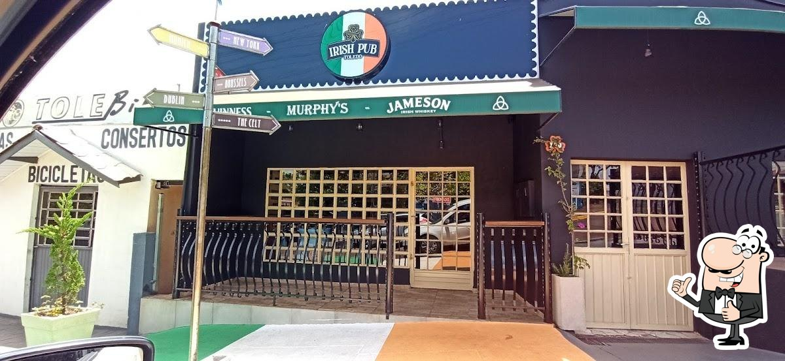
Irish Pub Toledo
Pub no estilo irlandês para quem quer algo descontraído, com ambiente de bar internacional.
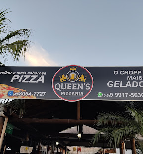
Queens Pub Pizzaria e Choperia
Combina pizzas com chopps, ótimo para grupos de amigos ou famílias — ambiente informal.
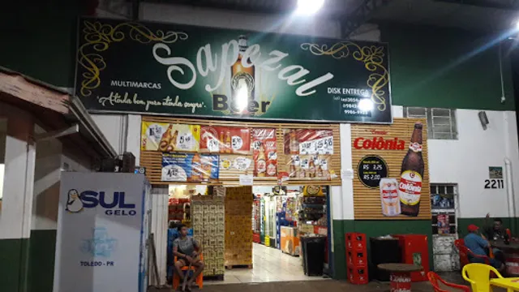
Sapezal Beer Bar e Conveniência
Bar especializado em cervejas com um ambiente mais informal, bom para sair à noite.
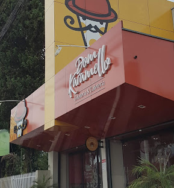
Dom Karamello
Uma cafeteria/confeitaria com ótimo atendimento, ambiente agradável e bons doces.
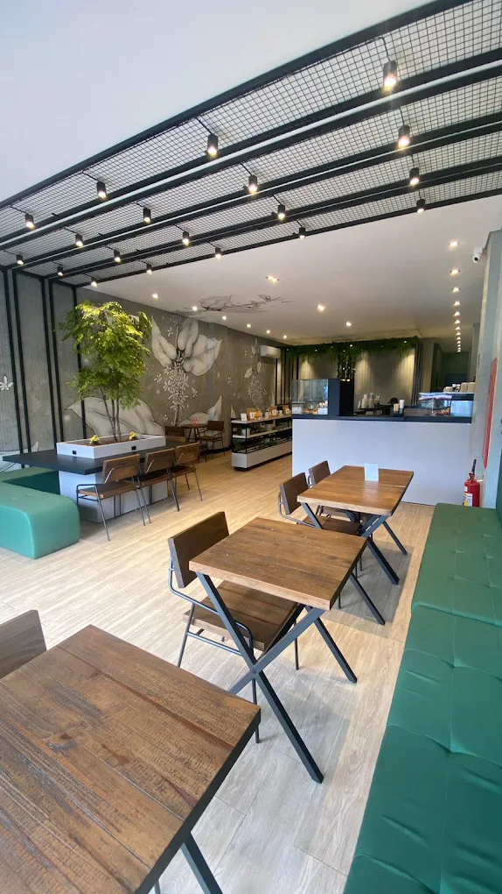
Go Coffee – Toledo
Café mais moderno, para pessoas que querem um ambiente mais descontraído.
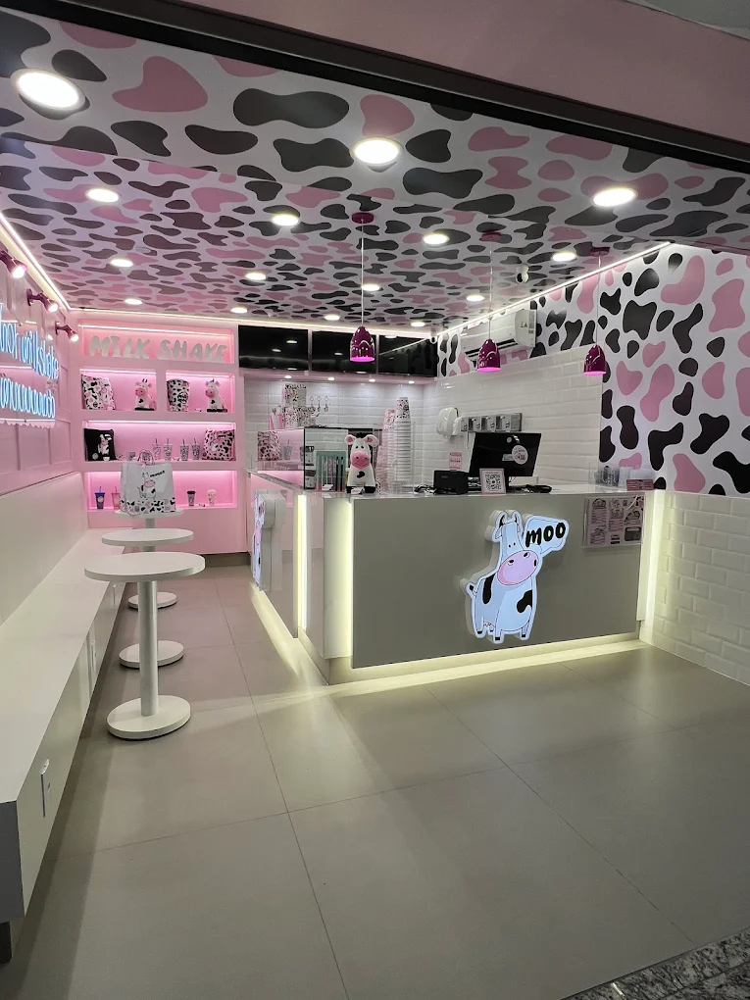
Milky Moo Toledo
Uma sorveteria bastante elogiada, excelente para sobremesa ou passeio leve.